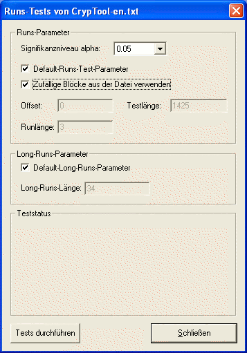
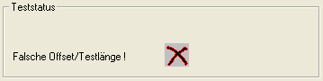
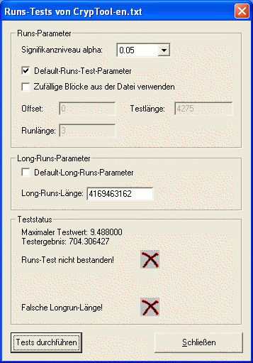
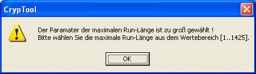
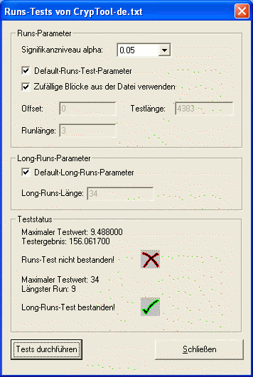
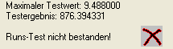
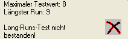

Diesen Dialog erreichen Sie über das Menü Analyse \ Zufallsanalyse \ Runs-Test.
Das folgende Bild zeigt das Dialogfenster des Runs-Tests:

In diesem Dialogfenster werden zwei verschiedene Tests durchgeführt: Runs- und Long Runs-Test.
Für den Runs-Test kann man verschiedene Parameter auswählen:
Das Signifikanzniveau alpha kann zwischen 3 voreingestellten Werten ausgewählt werden: 0.01, 0.05 und 0.10.
Mit der Checkbox Default-Runs-Test-Parameter entscheidet man sich für die Default-Werte (Offset = 0 und Testlänge = Dateilänge). Alternativ können benutzerdefinierte Werte im Test benutzt werden.
Mit der Run-Länge bestimmt man die Run-Länge, bis dem der Test durchgeführt werden soll.
Sind diese Werte falsch gewählt, erscheint eine Nachricht:

und zusätzlich eine Messagebox:
Für dem Long Runs-Test kann man nur einen Parameter wählen: die Long Run-Länge. Das ist der längste Run, der erlaubt ist, so dass die Datei den Test besteht.
Ist der Wert für die Long Run-Länge falsch gewählt, erscheint eine Nachricht:

und zusätzlich eine Messagebox:

Mit der Checkbox Zufällige Testblöcke verwenden kann man sich Zufallswerte für das Offset und die Testlänge erzeugen lassen. Hat der Benutzer Werte für Offset und Testlänge eingegeben und Zufällige Testblöcke verwenden angekreuzt, werden trotzdem die vom Benutzer definierten Werte für Offset und Testlänge benutzt.
Mit der Tests durchführen-Taste führt man den Test durch.
Nach der Betätigung der Tests durchführen-Taste sollte Ihr Dialogfenster so aussehen:

Der maximale Testwert ist ein statistischer Wert, der vom Signifikanzniveau abhängig ist und nicht überschritten wird, wenn der Test bestanden wird.
Das Testergebnis ist ein vom Test erzeugter statistischer Wert, der mit dem maximalen Testwert verglichen wird.
Nicht-Bestehen des Tests:
Wird der Runs-Test nicht bestanden, erscheint folgende Nachricht in Teststatus:

Wird der Long Runs-Test nicht bestanden, erscheint folgende Nachricht:

Mit Schließen verlässt man das Dialogfenster und kehrt zurück zum CrypTool-Hauptfenster.